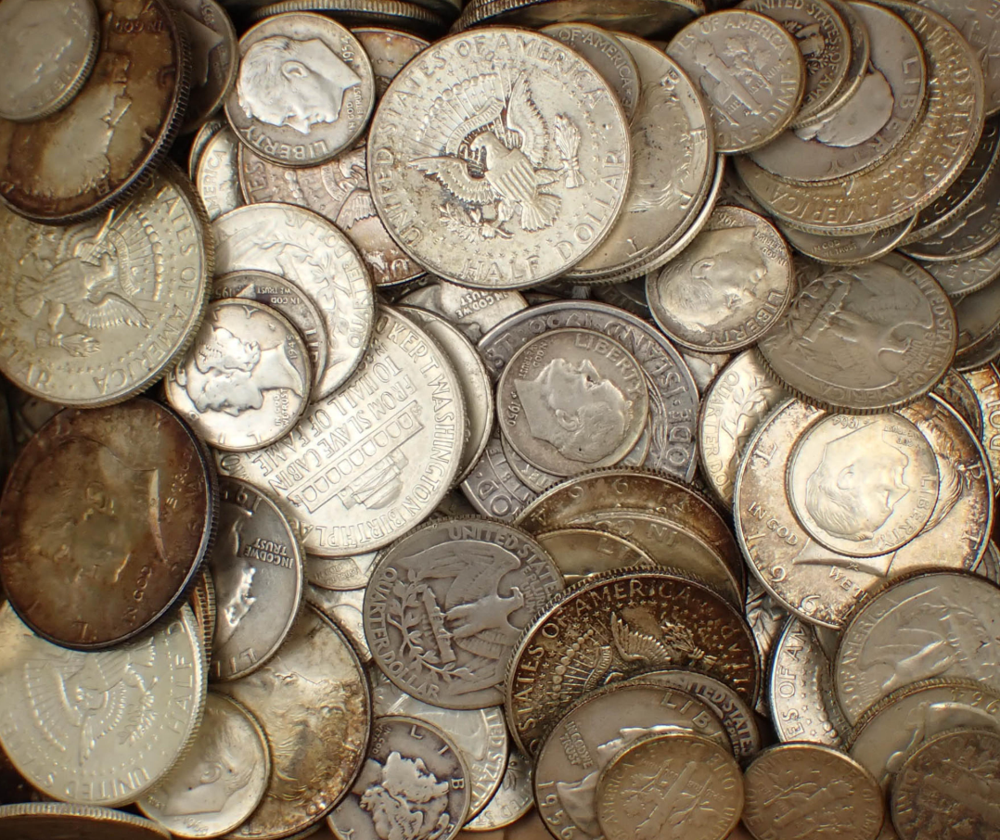

1881 Morgan Dollar
United States
Morgan dollars are possibly the most famous silver coin to collect. Minted from 1878 to 1904, then again in 1921, it depics a Liberty head on the observe, and a Eagle on reverse.
One of my favorite things to do during my free time is to spend money on money. I collect all kinds of currency, from bills printed during hyperinflation, to ancient hammer-struck coins of dead conquerors. More than all of them, I particularly enjoy collecting silver coins. This website is a short catalog of my personal favorite silver coins that I own.
United States
Morgan dollars are possibly the most famous silver coin to collect. Minted from 1878 to 1904, then again in 1921, it depics a Liberty head on the observe, and a Eagle on reverse.
Mexico
The Mexican silver peso was minted from 1920 to 1945 and is best known for its large size and high silver content.
United States
The Peace dollar was introduced after World War I to symbolize peace and recovery following the conflict. It's design features a more modern depiction of Liberty and a calm eagle, marking a stylistic shift away from earlier, more ornate U.S. silver coins.
Germany
This German Two Mark coin was issued during the German Empire under Kaiser Wilhelm II. It reflects the industrial and political strength of pre-WWI Germany and was commonly used in everyday commerce until the empires collapes.
Canada
Issued during World War II, this Canadian half dollar contains silver despite wartime metal shortages.
France + United Kingdom
This artifact began life as a French 1 Franc “Semeuse” silver coin, struck in .835 silver and later repurposed during World War I. It was adapted into an improvised identification or personal memento by Forewoman Edith Philpott (Mrs. Davies), service number 8860, of the Queen Mary’s Army Auxiliary Corps, who served between 1917 and 1919. The Q.M.A.A.C., originally formed as the Women’s Army Auxiliary Corps in 1917, provided vital non-combat support roles including clerical work, logistics, mechanical maintenance, and canteen services across Britain and the Western Front. Soldiers and auxiliaries often modified coins into ID tags when official tags were lost, especially in France where silver coinage was readily available. This altered franc is a rare surviving trace of Philpott’s service, made more significant by the fact that most Q.M.A.A.C. records were destroyed during a German air raid in 1940.
United States
This Washington quarter was produced during World War II and contains 90% silver, as all U.S. quarters did prior to 1965.
Canada
This Canadian five-cent piece is composed of silver, unlike later nickel-based issues. Early silver five-cent coins carried significant value at the time, but due to them being half the size of a dime, people kept losing them, leading to their replacment with the nickel version.
United States
The Standing Liberty quarter is widely regarded as one of the most artistic U.S. coin designs. Its depiction of Liberty standing guard was intended to represent preparedness and peace during the early 20th century.
United States
The Mercury dime features Liberty wearing a winged cap, often mistaken for the Roman god Mercury, and thus its famous nickname.
Prussia
This large silver thaler was issued in Prussia during the late 18th century and was a high-value trade coin of its time. Thalers like this one heavily influenced later European and even American currency standards.
Canada
A Canadian dime featuring Queen Victoria
Switzerland
Swiss half franc coins were still struck in silver until the late 1960s. Known for their clean design and precision, Swiss coins have long been associated with consistency and stability.
United Kingdom
This Victorian shilling was part of Britain’s long-running silver coinage system. Shillings were everyday currency and saw heavy circulation throughout the British Empire.
Australia
The Australian sixpence was struck in silver and closely followed British coin designs. It was commonly used in daily trade and remained in circulation for decades until Australia's switch to decimal currency.
Denmark
This Danish 25 Øre coin was minted shortly after World War I during a period of economic adjustment. Smaller silver denominations like this were gradually phased out as silver became too valuable for everyday coinage.
Coin collecting is the hobby of gathering coins based on factors like age, country, design, or rarity. I do it because I’m interested in learning about different currencies and their historical or monetary value. It’s a way to organize and study, and sometimes it can also be an investment, especially with silver coins.
Coin collecting works by obtaining coins through circulation, dealers, online marketplaces, or coin shows, then organizing them by country, year, mint mark, or condition. I prefer heavily worn coins, as they tend to tell more of a story than pristine examples.